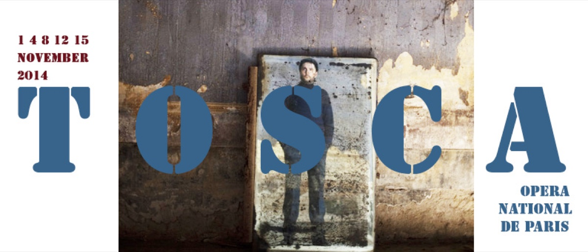
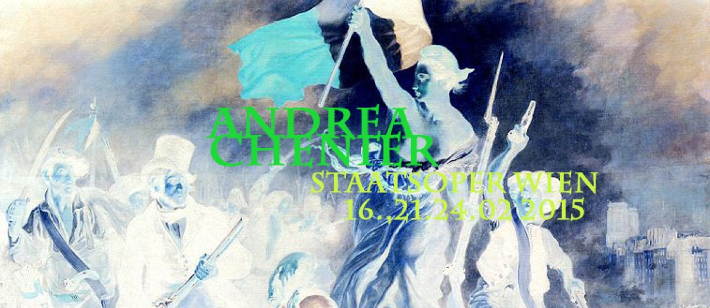
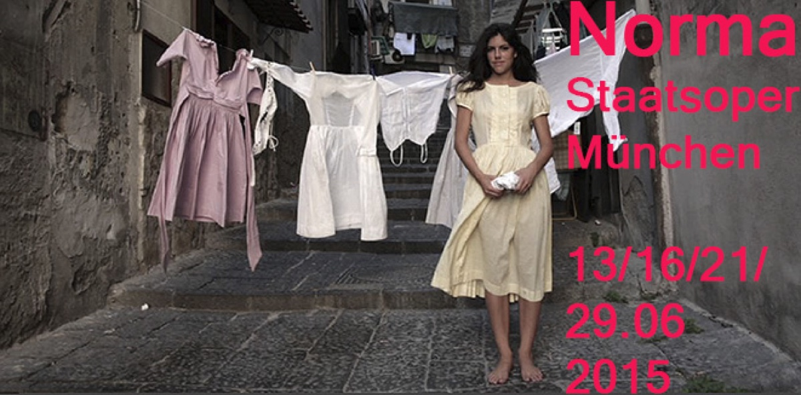
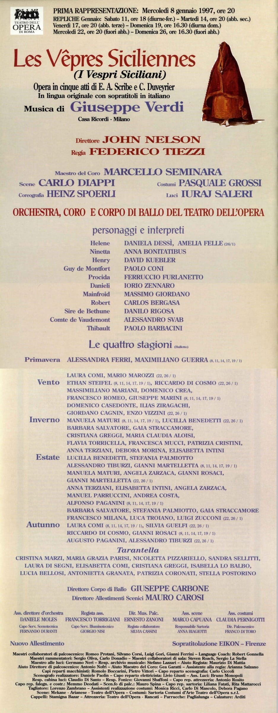
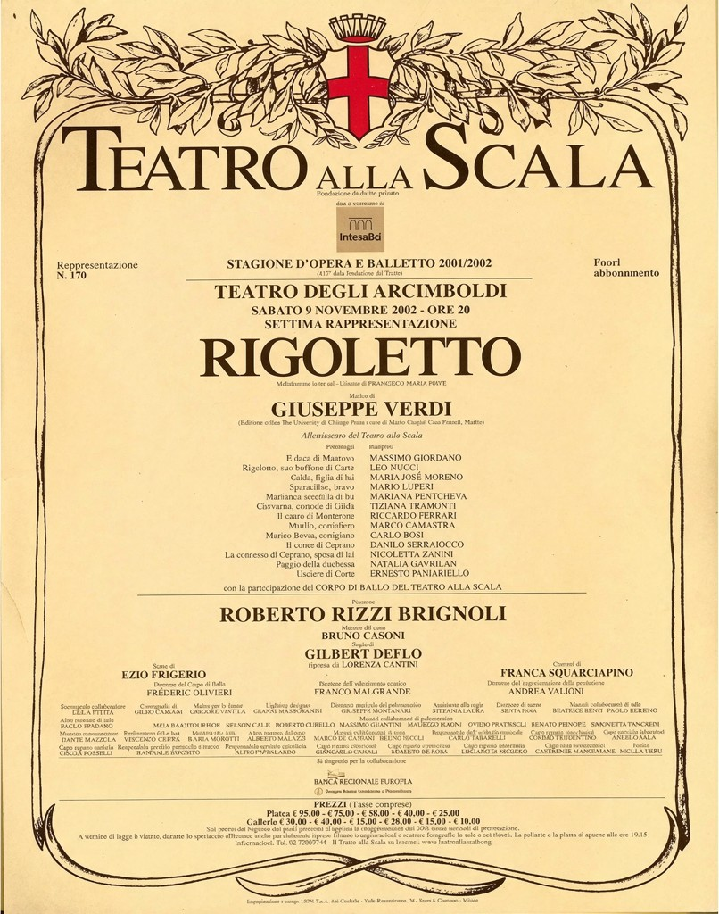
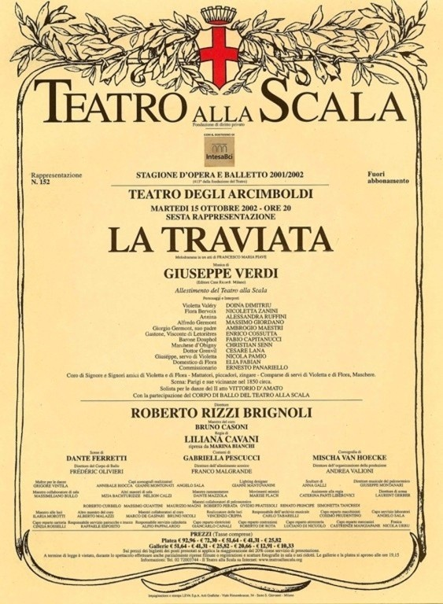
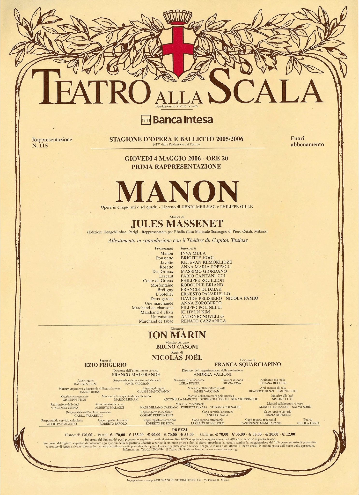
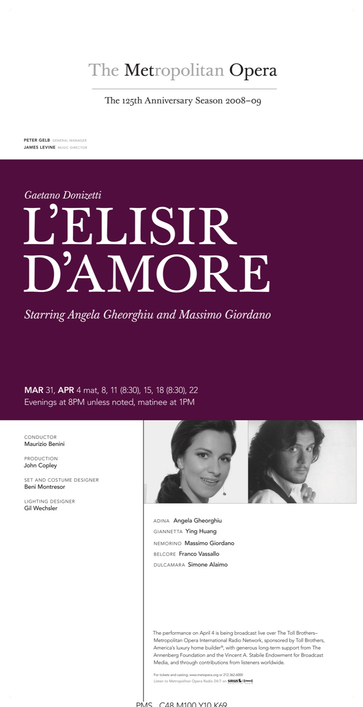

Posters
Eight seasons announced in his own way, between May 2014 and June 2015: Saint Petersburg, Paris, Vienna, Berlin, Munich. Not the houses’ own posters, but the ones he made for each run. Designed by Massimo Giordano — free to download and to use with credit.

BMG poster for the release of the first album · 2013 · photograph by Marisa Crawford · “Der italienische Tenor, der Opernhäuser zum Beben bringt” — the Italian tenor who makes opera houses shake
Download

Palace Square, St Petersburg · 25 May 2014
Download

Opéra national de Paris · 29 June, 2, 7, 12, 14 July 2014
Download

Opéra national de Paris · 1, 4, 10, 13, 15 November 2014
Download


Wiener Staatsoper · 18 February 2015
Download


Wiener Staatsoper · 24 and 27 March 2015
Download

Musikverein, Vienna · 16 and 17 April 2015 · Wiener Symphoniker, Bertrand de Billy
Download

Deutsche Oper Berlin · 16 and 21 May 2015
Download

Bayerische Staatsoper, Munich · 13, 16, 21 June 2015
Download

From the theatres
Official playbills
Issued by the houses themselves. Shown here as documentation; each remains the property of the theatre.

Teatro dell’Opera di Roma · opening night 8 January 1997 · as Mainfroid, with Daniela Dessì, Ferruccio Furlanetto, Paolo Coni and David Kuebler · John Nelson · directed by Federico Tiezzi, sets by Carlo Diappi, costumes by Pasquale Grossi

Teatro alla Scala · 6 September 2001, opening night · Progetto Giovani · as Edoardo di Sanval, with Fabio Capitanucci, Alfonso Antoniozzi and Doina Dimitriu · Corrado Rovaris · directed and designed by Pier Luigi Pizzi · broadcast live by RAI Radiotre and Euroradio

Teatro alla Scala, Teatro degli Arcimboldi · 9 November 2002 · with Leo Nucci, María José Moreno and Mario Luperi · Roberto Rizzi Brignoli · directed by Gilbert Deflo, sets by Ezio Frigerio, costumes by Franca Squarciapino

Teatro alla Scala at the Teatro degli Arcimboldi · 15 October 2002 · as Alfredo Germont, with Doina Dimitriu and Ambrogio Maestri · Roberto Rizzi Brignoli · directed by Liliana Cavani, sets by Dante Ferretti, costumes by Gabriella Pescucci

Teatro alla Scala · 4 May 2006, opening night · as Des Grieux, with Inva Mula, Fabio Capitanucci and Philippe Rouillon · Ion Marin · directed by Nicolas Joël · co-production with the Théâtre du Capitole, Toulouse

Teatro alla Scala · 12 July 2007 · with Elena Mosuc and George Gagnidze · Lorin Maazel · directed by Liliana Cavani, sets by Dante Ferretti, costumes by Gabriella Pescucci

Teatro dell’Opera di Roma · 17, 19, 22 and 24 June 2010 · with Annick Massis · Alain Guingal · directed by Jean-Louis Grinda · new production with the Opéra de Monte-Carlo

Metropolitan Opera, 125th Anniversary Season · Rodolfo on 6 and 10 January 2009 · Frédéric Chaslin, production by Franco Zeffirelli, with Maija Kovalevska and Mariusz Kwiecien

Metropolitan Opera, 125th Anniversary Season · Alfredo · 20, 23, 27 and 31 October, 3, 6, 12, 15 and 20 November 2008 · Paolo Carignani in his house debut, Franco Zeffirelli production, with Anja Harteros and Andrzej Dobber

Metropolitan Opera, 125th Anniversary Season · Nemorino · 31 March and 4, 8, 11, 15, 18 and 22 April 2009 · Maurizio Benini, John Copley production · billed on the poster: Starring Angela Gheorghiu and Massimo Giordano